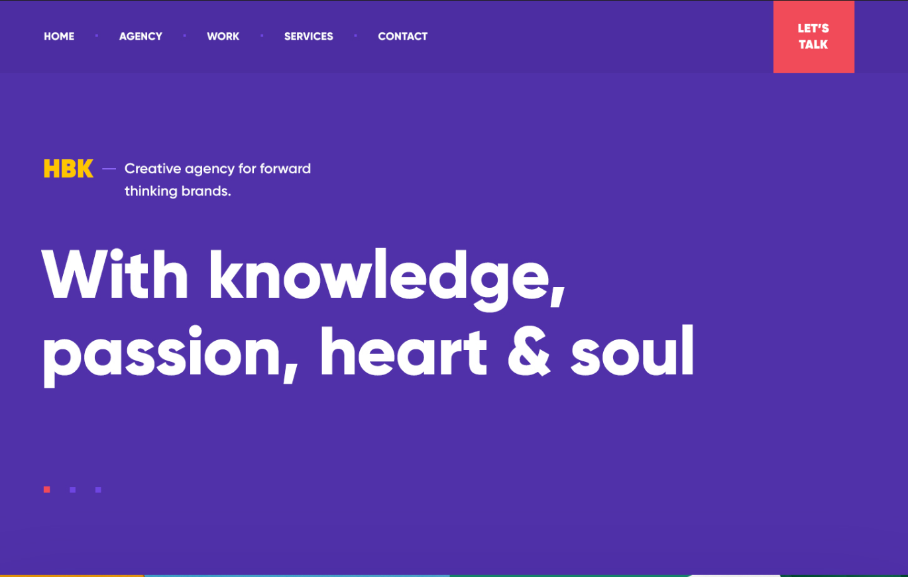

When designing the UI for this site, simplicity and consistency were my main concerns. A simple, single-colour palette was chosen to avoid sensory overload, and the colours used were kept light in order to avoid text blending in with the background colours. Interactive elements (such as buttons) were animated to avoid confusion, as well as to make sure the user knows they can interact with the element. Navigation elements within the user interface were also kept consistent on each page to avoid having the user learn how to use the website again each time they navigate to a different part of the website.
One of my main inspirations for the design of this website was
this portfolio site from Dribbble (link):

I chose a similar layout to the site shown above, with a horizontal
navigation bar across the top of the site and content below. A similar
colour scheme was also chosen, however lighter/more muted colours
were used, similar to popular social networking sites like Twitter
and Facebook. The website was also split into pages instead of featuring
one continuous page for the website. This user interface layout is
quite common and therefore increases accessibility. This is because
new users will be able to use what they have learned from using
other websites and easily navigate this site.